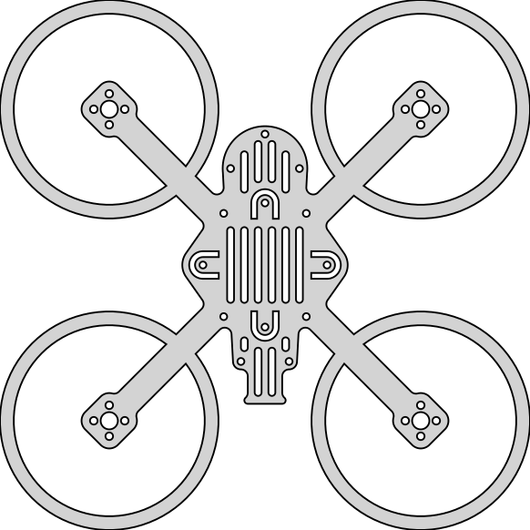
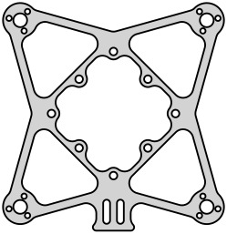

Outdoor Drone Frames
Ultimate Backyard Racer - Low Profile (UBR-LP) Series
The UBR-LP series was designed to move the FPV camera off of the stack, which has the following benefits.
protects the camera by providing a secure mount, and since it's not the only thing on top of the drone, it won't take all of the punishment from crashes and collissions
allows for easy access to the components on the stack
protects the stack components
frame sizes are measured motor to motor, diagonally, in millimeters
UBR110-LP
The UBR110-LP is a drone frame made for 2" props. It's a durable frame that was built for flying in a small area.
Frame Size: 110 mm
Propeller Size: 2"
Motor Size: 1202.5 ~ 11500 KV
Flight Controller: Whoop Style AIO with 20A+ ESC
Video: HDZero is preferred, but should work with other digital systems as well as analog
Battery: 2S 550-720 mAh LiPo/LiHV

UBR128-LP
The UBR128-LP is a drone frame made for 2.5" props. It's a durable frame that was built for flying in a small area.
Frame Size: 128 mm
Propeller Size: 2.5"
Motor Size: 1202.5 ~ 11500 KV
Flight Controller: Whoop Style AIO with 20A+ ESC
Video: HDZero is preferred, but should work with other digital systems as well as analog
Battery: 2S 550-720 mAh LiPo/LiHV
UBR142-LP
The UBR142-LP is a drone frame made for 3" props. It's a durable frame that was built for flying in a small area.
Frame Size: 142 mm
Propeller Size: 3"
Motor Size: 1202.5 ~ 11500 KV
Flight Controller: Whoop Style AIO with 20A+ ESC
Video: HDZero is preferred, but should work with other digital systems as well as analog
Battery: 2S 550-720 mAh LiPo/LiHV
Indoor Drone Frames
Ultimate Indoor Racer - Hybrid Frame (UIR-HF) Series
The UIR-HF series blends a hard underbody frame that serves as the base for all of the components with a modified plastic ducted frame that
protects the components and keeps the propellers guarded. The benefits of the hybrid frame include the following:
components are more secure since they are attached to a stronger frame
components are still protected by the modified plastic ducted frame
the durability of this frame allows for the use of 2S batteries for more power
frame sizes are measured motor to motor, diagonally, in millimeters
UIR75-HF
The UIR75-HF is a hybrid drone frame made for 40 mm props. It blends a hard underbody frame that serves as the base for all of the components
with a modified plastic ducted frame that protects the components and keeps the propellers guarded.
Frame Size: 75 mm
Propeller Size: 40 mm
Motor Size: 1002 ~ 14000 KV
Flight Controller: Whoop Style AIO with 12A+ ESC
Video: HDZero is preferred, but should work with other digital systems as well as analog
Battery: 2S 300-350 mAh LiPo/LiHV
